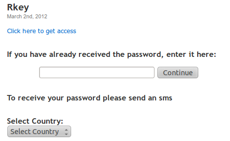
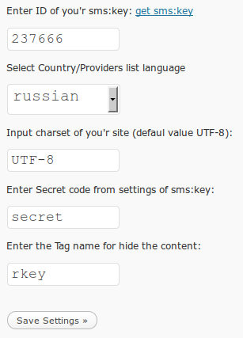

SmsCoin - sms: key payment module for access to the hidden text (for WordPress)
by sending SMS messages, based on SMS:key service
(Local version).
All information within this software product,
is the intellectual property of SmsCoin, Israel.
Given software can be used by http://smscoin.com/ clients
for sms:key service only. Any other use
of the software is violation of the company's right and will be pursued
according to operating
law.
SmsCoin. Israel will not be held liable for any loss
or damage of any kind as a result of using this software,
including any lost revenues and/or data.
|
- Works only on PHP 5 version.
- To use this module you first must register on http://smscoin.net website,
and connection to sms:key service.
- Registration and connection process are absolutely free.
How it works:
This plugin can provide paid access to any content on your website.
In reply SMS-message user receives a short text password (key),
which allows him to access the content you hide with this key.
You decide how many times or for how long this password can be used for access.
In the text of a page or post you add the tag: [rkey] hidden text [/ rkey].
To view the text hidden between the tags, user will need to send an SMS to a short
code according to the country of his choice. In reply SMS message he will receive the access code that allows him to access the hidden text.
Example:

We advice you not to use the module several times on the same page.
|
Installation:
- Copy the folder "smscoin_rkey" from the archive to the folder: wp-content/plugins.
- Go to the Admin panel of your "WordPress", section Plugins,
Find "SmsCoin R-Key", click to activate.
- Set write permissions to file.
/wp-content/plugins/smscoin_rkey/data/local.js
- Go to the menu "SmsCoin R-Key", select "Settings" and
follow the instructions for plugin configuration.
Example:

Installation is complete!
Configure sms: key service:
- In the control panel on smscoin.net website, go to sms:key service settings
- Activate the option: Passwords' transfer.
- Enter the URL of the handler:
http://yoursite.com/wp-content/plugins/smscoin_rkey/result_325.php
- Enter the password for the signature request handler.
Uninstall:
- Go to the Admin panel of your "WordPress", Plugins section,
Find "SmsCoin R-Key", click to deactivate.
- Delete the folder wp-content/plugins/smscoin_rkey
Module is uninstalled.
|